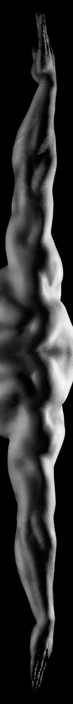
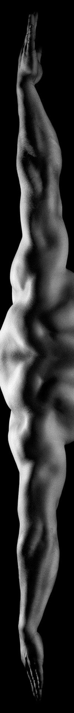

l. Pourquoi s’étirer ?
La souplesse a son influence dans la progression en musculation : La souplesse n’est pas un facteur purement morphologique puisqu’elle peut évoluer au cours des entraînements mais elle pourra entraîner les mêmes conséquences qu’une morphologie défavorable. Un individu longiligne manquant de souplesse de chevilles, ne pourra pas tirer pleinement profit du soulevé de terre, tant bien que même il dispose d’une morphologie favorable.
Pour être performant et limiter le risque de blessure, il est impératif d’intégrer un travail de souplesse et de mobilisation articulaire dans son programme. Une bonne souplesse de cheville, d’épaules ou encore de poignets rendra la technique meilleure. Par exemple, dans le cadre du squat, des chevilles raides engendreront un buste très incliné ainsi qu’une flexion limitée des cuisses, ce qui n’est pas favorable à un recrutement musculaire optimal.
ll. Quand s’étirer ?
Avant une séance pour gagner en “souplesse”:En effet, lorsque l’on s’étire, le système nerveux va lever certaines inhibitions permettant d’avoir plus d’amplitude. A force de répétition, cette nouvelle amplitude deviendra naturelle pour le système, ce qui diminuera les tiraillements lorsque les amplitudes sont grandes. De plus, les étirements permettent de faire des mouvements avec plus d’amplitude sans risque, alors donc les risques de se faire une tendinite ou une déchirure musculaire sont réduits.
Entre les séries pour accélérer sa récupération:
Il est possible qu’entre chaque série, la circulation sanguine se fasse moins bien. Les muscles restent tendus ce qui rend difficile l’aptitude à faire des séries productives par la suite. C’est alors qu’un étirement léger des muscles (sans forcer et que quelques secondes) va permettre de relancer la circulation sanguine.
Après la séance pour réduire les courbatures:
Enfin, un bon étirement, d’une dizaine de seconde par étirement, permet de réduire les courbatures qui surviennent le lendemain / surlendemain des séances, en relaxant les muscles pour les mettre dans les meilleures dispositions pour récupérer.
Attention, il ne s’agit pas de tirer fort mais bien de se détendre.
lll. Suggestion d'étirements:
| Articulation / muscle concerné | Mouvements |
|---|---|
| Cou | Effectuer lentement avec sa tête de grands cercles: le menton vient toucher les pectoraux, les oreilles touchent les épaules et le bas du crâne, la nuque. |
| Trapèzes | S'allonger sur le dos, les bras le long du corps, paume de main vers le sol. Donner une impulsion avec le bassin pour faire basculer les jambes vers la tête: se retrouver avec le genous au dessus des yeux SANS FORCER SUR LES CERVICALES. |
| Epaules |
Se mettre en position assise avec les mains posées sur le sol derrière soi et les genoux pliés. Déplier lentement les genoux et reculer les mains pour que les bras soient bien tendus. Se placer debout avec une haltère en main, se pencher vers l'avant jusqu'à avoir le dos plat et laisser son bras pendre. L'autre bras peut maintenir l'équilibre en s'aidant d'un mur. Se placer sur le dos et rouler sur l'épaule que l'on veut étirer. Presser l’épaule contre le sol en roulant légèrement pour augmenter l’amplitude. |
| Pectoraux |
Se positionner à quatre pattes devant une chaise. Poser ses avant-bras sur la chaise l'un sur l'autre. Faire passer sa tête entre ses bras en se penchant en avant et reculer les genoux. Se placer à plat ventre sur une surface dure et surélevée (ex: banc) puis de faire des cercles avec un bras en gardant les doigts en arrière. |
| Dorsaux |
Se positionner à quatre pattes, placer un bras sur le sol devant soi. L'autre bras décolle et vient chercher le genou opposé. Se mettre en position assise avec les jambes pliée à 30°. Placer le coude opposée à la jambe avant sur le sol loin devant soi. Lever l'autre bras et faire du "crawl" sur place avec ce bras. Se mettre en position assise, les jambes légèrement pliée. Enrouler les bras autour des jambes, sous les genoux. Se pencher en avant et serrer les jambes. |
| Biceps | Se mettre en position assise avec les mains posées sur le sol derrière soi et les genoux pliés. Déplier lentement les genoux et reculer les mains pour que les bras soient bien tendus. |
| Triceps | Poser son bras contre un mur et venir toucher l'épaule avec sa main. |
| Avant-bras et poignets | Se positionner à quattre pattes, bras tendus et faire des vas et viens avec le bassin. Chager l'orientation des paumes de main et des doigts. |
| Abdos |
Se positionner à quatre pattes, se pencher en avant pour avoir le nombril au niveau du sol. Courber le dos en mettant le poids sur les coudes. Debout, se pencher d'un côté comme si le bras était pesant et se grandir de l'autre en levant le bras opposé. |
| Fessiers | Se positionner assis, venir poser son pied à l'extérieur de la deuxième cuisse. Avec le bras du côté étiré, ramener le genou au niveau des pectoraux. |
| Adducteurs | Se positionner allongé sur le ventre et venir coller les plantes de pieds entre elles. Rapprocher le plus possible les talons des fessiers. |
| Quadriceps | Debout, venir attraper avec la main du même côté son pied et ramener le talon le plus possible vers l'ischio-jambier. |
| Ischio-jambiers | Debout, venir toucher les chevilles avec les mains en gardant le jambes tendues et en courbant les dos. |
| Mollets | Debout, venir appuyer les mains au mur comme pour le pousser. Fléchir légèrement le genou de la jambe avant en gardant les talons au sol. Se pencher vers le mur en tendant la jambe arrière jusqu'à ce que le talon arrière décolle. |
| Chevilles | Débout, lever une jambe et écraser doucement les doigts de pied de celle-ci sur le sol. |
